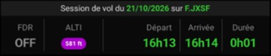

Possibilités
- Bandeau titre : « Session de vol du [date] sur [appareil] » (date et appareil en vert).
- Cinq colonnes : FDR (enregistreur ON/OFF), ALTI (altitude calée, pastille violette si définie), Départ (heure de démarrage moteur), Arrivée (heure d'arrêt moteur), Durée (durée de session).
Gestes supportés
Appui long : —
Double-tap : —
Note
- Les horaires Départ / Arrivée proviennent de l'action moteur (instrument Action / ANLACT) ; la durée en découle.
- Instrument en lecture seule (affichage récapitulatif).
CMNFGT
